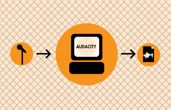

Tester
These tapes would then be edited using razor blades and sticky tape. Much of the jargon used in audio editing today comes from this process. Making a "cut" mean literally cutting the audio tape at a certain point. 'Multitrack' referred to recording many separate sounds onto the same tape using extra wide to tape to fit more 'tracks'. These terms, and more, are still used today and many of the fundamental techniques which form good audio recording and editing practice still form the basis of this craft.

nstalling from source works on any Linux system, so its a good process to know, and it more or less follows this route once you have a source package:
tar zxvf packagename.tar.gz then deflateWhere 'packagename' in the example above is the actual name of your package that you wish to
- cp
- pwd
- tab
Author : Tester
© adam hyde 2007
License : General Public License
Produced in FLOSS Manuals (http://www.flossmanuals.net)